Eight screens, one incident, start to finish.
Each screen answers one question a manager has during the incident. Click any of them to see it full size.
APEX · Fulfillment Intelligence · Enterprise product design
That's the question I designed APEX around. It's a decision workspace for fulfillment managers that carries one incident from the first warning to an approved recovery, and then shows honestly whether the recovery worked.
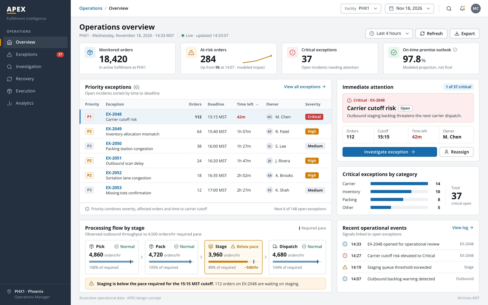
The eight screens
Each screen answers one question a manager has during the incident. Click any of them to see it full size.
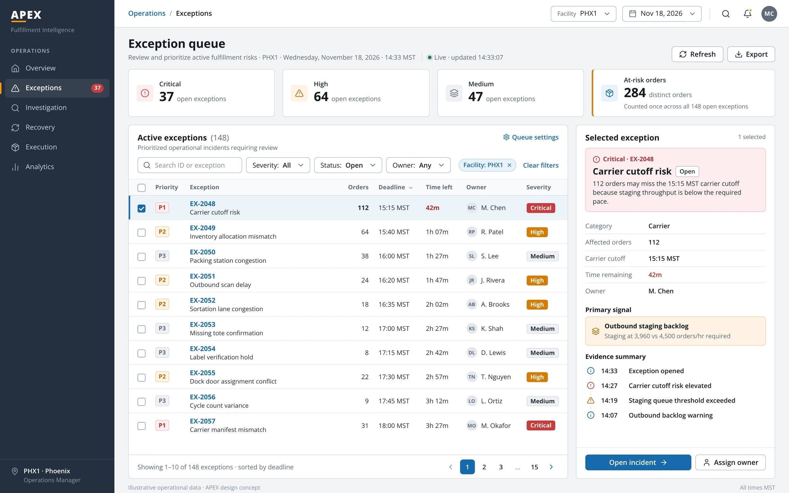
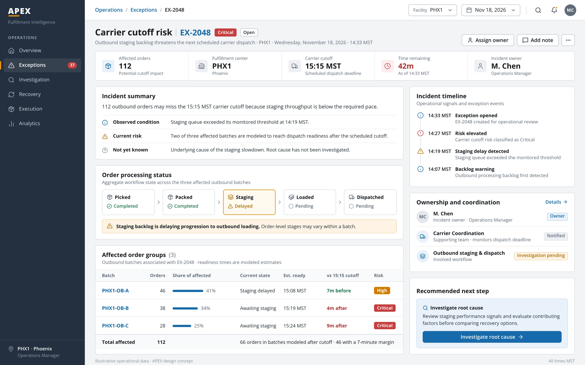
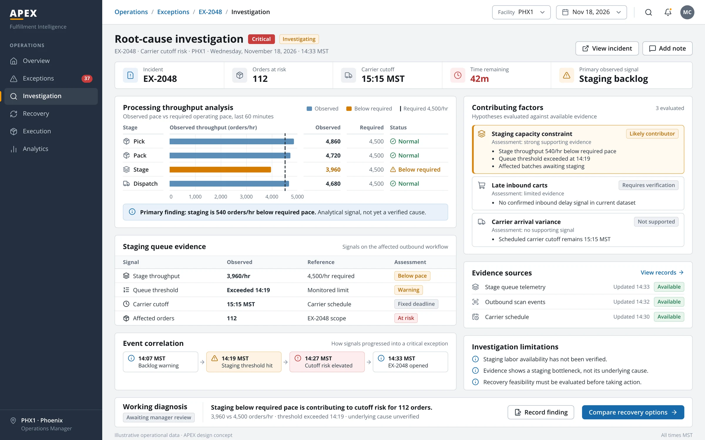
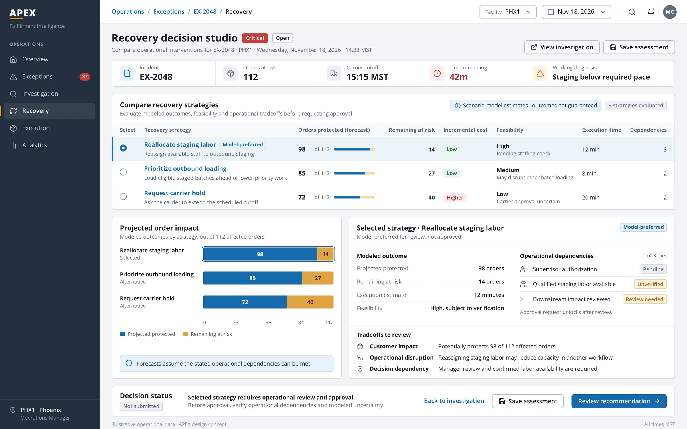
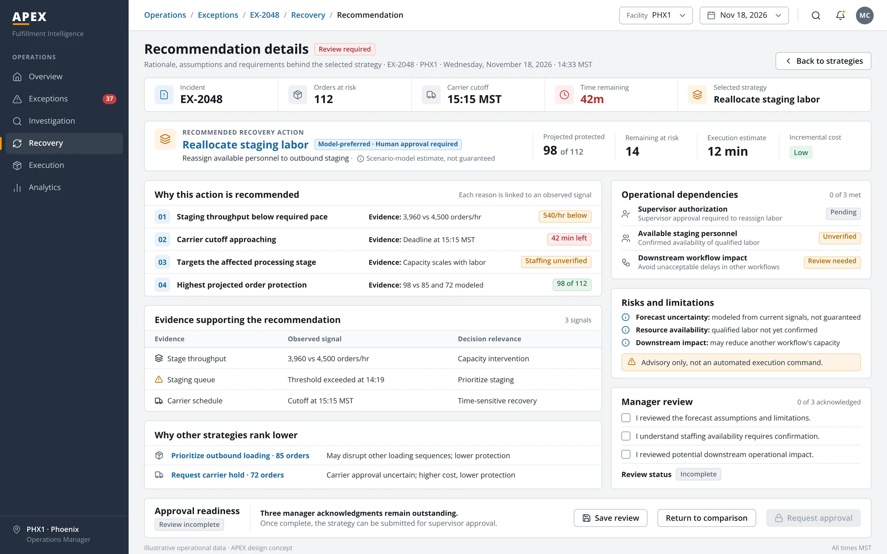
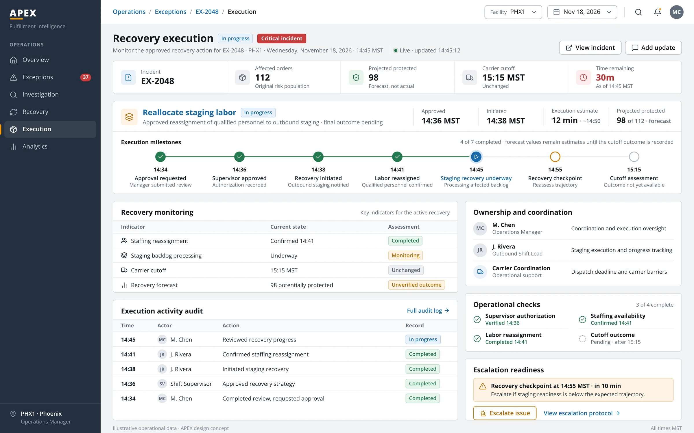
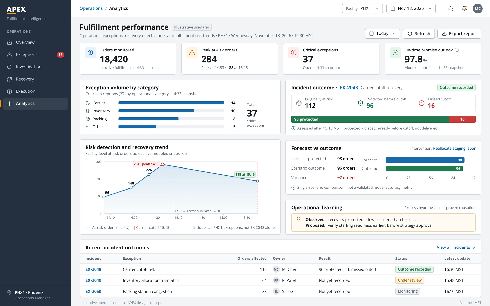
The shift
Eighteen thousand orders are moving through the building. Nothing looks wrong yet.
Then the warnings start stacking up, quietly. A backlog flag at 14:07. A staging queue that crosses its limit at 14:19. By 14:33 there's a critical exception on the board: 112 orders that may not be ready for the 15:15 carrier pickup.
The manager on shift can see that something's wrong. What they can't see, at least not in one place, is why it's happening, what they can do about it, who has to sign off, and whether it'll work in time.
Outbound processing falls behind. Easy to dismiss on its own.
Staging runs at 3,960 orders an hour. The cutoff needs 4,500.
Two of three outbound batches are modeled to miss 15:15.
112 orders, one owner, 42 minutes. This is where APEX takes over.
The problem
How might we help a manager find the risk that matters most, understand what's causing it, and coordinate a recovery in time, without losing track of who decided what?
Answering "what do I do next" means jumping between monitoring, staffing and carrier views and re-finding the same incident in each.
You can see that risk is high, but not which signal raised it, so the first minutes go to re-deriving the diagnosis by hand.
When approvals happen in side conversations, nobody can say afterwards who approved a staffing move, or when.
If a projection is never compared with what actually happened, the team never learns which recoveries work.
Those four hypotheses shaped the research approach, set up with UX research, product and engineering:
Who it's for
"When an exception threatens the cutoff, help me see the exposure, pick a response I can defend, and get it moving before the window closes."
"Once something's approved, tell me exactly what to do, by when, and how to report whether it's working."
"Show me the cutoffs coming up and anything that might need a conversation with the carrier."
The structural decision
Every screen reads from and writes to the same record, so the ID, order count, deadline, owner and state come along as the manager moves. Keep scrolling and follow it.
| Facility | Orders | Cutoff | Owner | Severity | State |
|---|---|---|---|---|---|
| PHX1 | 112 | 15:15 MST | M. Chen | Critical | Open |
Principles
Every screen ends in one primary action: Investigate exception, Compare recovery options, Review recommendation. If a chart doesn't change what someone does, it's gone.Screens 01–08
Throughput, queue and schedule signals with timestamps, plus a list of what's still unverified, come before any recommendation.Screens 04 and 06
"Critical" describes risk. "Open", "In progress" and "Outcome recorded" describe work. They never share a label or a column.Screens 01, 02, 07
"98 projected" carries its label through execution until the cutoff result is recorded.Screens 05, 07, 08
The system advises. Moving staff or holding a truck needs an explicit, logged human approval.Screens 06 and 07
Walkthrough
As you scroll, the screen follows along and frames the exact part each decision is about.
The priority table ranks by time left before the cutoff, not by when an alert fired. EX-2048 sits on top with 42 minutes.
Why: the oldest alert is rarely the most urgent one. Minutes to cutoff is what a manager actually triages on.
The queue counts 148 open exceptions (37 critical, 64 high, 47 medium) and, in a separate tile, 284 distinct at-risk orders.
Why: when two different totals sit side by side and happen to match, people assume they measure the same thing.
The 112 orders split into batches of 46, 38 and 28. One is modeled ready 7 minutes before 15:15; the other two land 4 and 9 minutes after.
Why: "112 at risk" is abstract. "66 orders will be late by up to 9 minutes" is something you can act on.
Pick, pack and dispatch all run above the 4,500/hr line. Staging runs at 3,960, a 540-order gap. Three explanations are rated by evidence; only one is a likely contributor.
Why: the chart shows where things slow down, not why. A limitations panel says plainly that staff availability hasn't been checked.
Reallocate staging labor protects a forecast 98 of 112. Prioritizing loading protects 85; asking the carrier to wait protects 72. Each shows cost, feasibility and time to execute.
Why: one "Fix it" button hides the tradeoff. Every option here adds up to the same 112, so the comparison is fair.
The preferred strategy is tagged "model-preferred", never "approved". Its three dependencies sit right next to the forecast: supervisor sign-off, staff actually available, and impact on other work.
Why: a 98 means nothing if the people to do the work aren't there.
Before anyone can request approval, the manager confirms three things: the forecast's assumptions, that staffing is unconfirmed, and the knock-on effects. Until then, Request approval stays locked in the bar below.
Why: it costs a few seconds and stops a staffing change from going out on an unchecked assumption.
Approved at 14:36, started at 14:38, staff reassigned by 14:41. Seven milestones show what's done, what's live and what's next, including a 14:55 checkpoint where escalation kicks in.
Why: the 98 is still labeled "forecast, not actual". Nobody should read a prediction as a result while the clock is running.
After the cutoff, 96 orders made it and 16 didn't. The forecast said 98. The two numbers sit side by side, and the gap becomes a concrete question about checking staff earlier.
Why: a tool that hides its own mistakes won't earn trust on an operations floor.
Hard calls
Each had a faster, shinier option on the table.
One-click "Fix now" that runs the top recommendation
A side-by-side comparison with an approval gate. Moving staff has effects the model can't see, and a manager has to be able to explain the call upward.
A confidence percentage on every strategy
Evidence ratings and plain-language assumptions. A precise-looking number suggests a calibration nobody has validated.
Approve straight from the comparison screen
A short acknowledgment step on its own screen. A few seconds is a small price against an unsafe staffing move.
One pill mixing "Critical" and "In review"
Severity and workflow state, separated on every screen. It costs a column and removes a very common misreading.
A results view that only reports orders saved
Forecast vs outcome, misses included. The 16 orders that didn't make it are as visible as the 96 that did.
The numbers
The scenario is built so every total reconciles across all eight screens. Here's the full set.
All open: 37 critical, 64 high, 47 medium = 148
Staging gap: 4,500 − 3,960 = 540 orders an hour
96 at 14:07 → 148 at 14:19 → 226 at 14:27 → 284 peak at 14:33 → 188 at 15:15
Protected means dispatch-ready before the cutoff, not delivered. One scenario, so the variance isn't a model accuracy figure.
How it will be measured
The design and prototype are complete. These are the targets for the next stage, scenario-based usability testing with operations practitioners. They're goals, not results.
| Measure | Baseline | Target | Baseline vs target | Change sought |
|---|---|---|---|---|
| Find the critical exceptionTimed from the overview | 12 min | 4 min | Baseline Target | −67% |
| Reach a recovery decisionInvestigation to strategy selected | 9 min | 3 min | Baseline Target | −67% |
| Tool switches per incidentObserved navigation per task | 7 | 2 | Baseline Target | −5 switches |
| Task completionScenario tasks completed unaided | 68% | 90% | Baseline Target | +22 points |
| Decision accuracySpots unverified dependencies before approval | To set | To set | Defined during evaluation | Track |
Problem framing and workflow mapping.
Prioritization and recovery concepts against the scenario.
High-fidelity screens and component patterns.
Eight connected screens, full incident lifecycle.
Usability testing against these targets, then iteration.
Design system
Operations screens get scanned all shift long, so the system stays neutral and lets status do the talking. These are real pieces of the product, cropped straight from the screens.
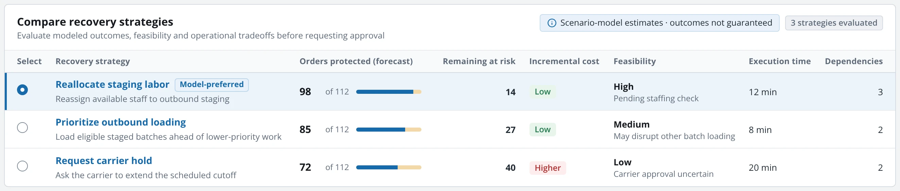
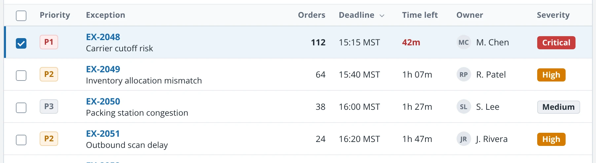
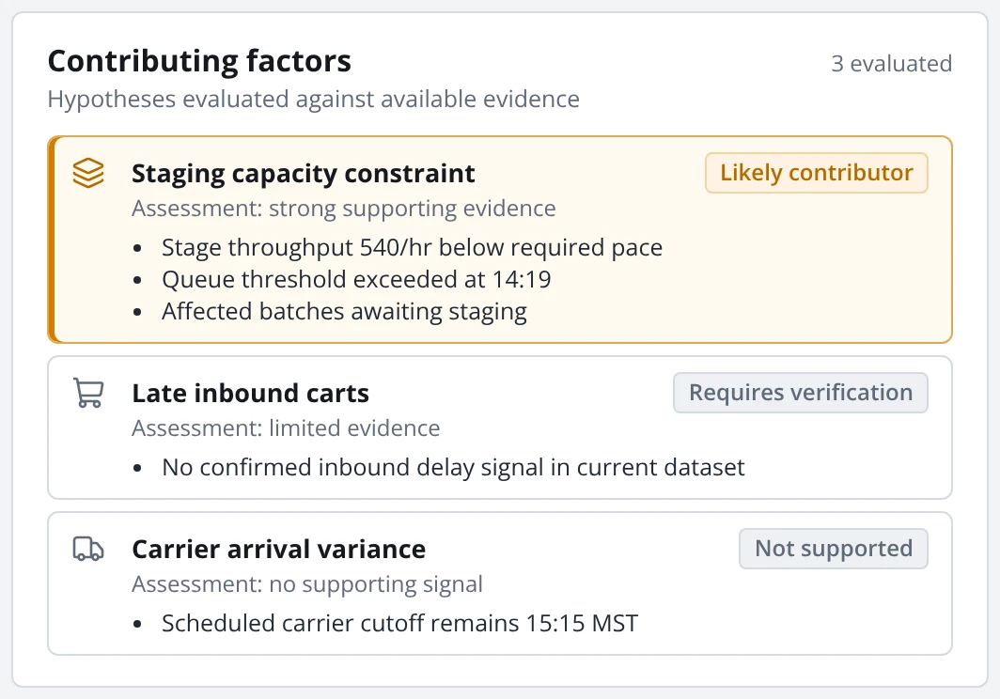
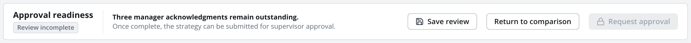
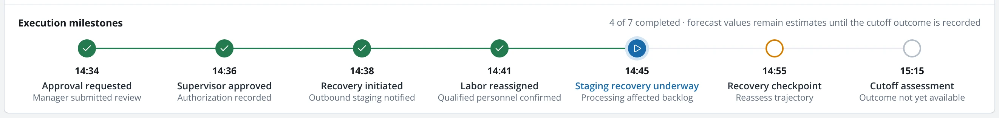
My role
As the UI/UX designer, I led the experience end to end, working alongside UX research, product and engineering.
The structure of eight connected workflows around one incident record.
Throughput, queue and deadline signals turned into screens a manager can scan under pressure.
From the priority table through strategy comparison to execution monitoring.
Status, evidence, dependency, approval and audit patterns shared by every screen.
Evidence-linked reasons, honest uncertainty, and an approval gate the model can't skip.
The measures and targets the evaluation stage will test against.
After the cutoff
Predicting the risk turned out to be the easy part. The real work was making a high-stakes decision easy to inspect, from the first warning to the forecast that missed by two.
Run scenario-based sessions with operations practitioners and measure against the targets.
Walk the workflow with someone from warehouse or logistics operations to catch assumptions that won't hold on a real floor.
Pull labor availability into the investigation, so feasibility is known before strategies are compared.